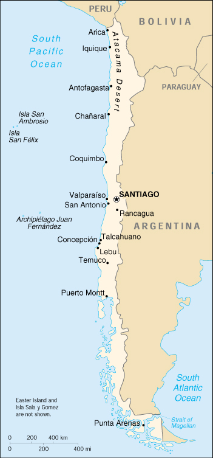

|
Chile | |
| Introduction Geography People Government Economy Communications Transportation Military Transnational Issues | ||
|  | ||
| Chile | Introduction | Top of Page |
| Background: | A three-year-old Marxist government was overthrown in 1973 by a dictatorial military regime led by Augusto PINOCHET, which ruled until a freely elected president was installed in 1990. Sound economic policies, first implemented by the PINOCHET dictatorship, led to unprecedented growth in 1991-97 and have helped secure the country's commitment to democratic and representative government. Growth slowed in 1998-99, but recovered strongly in 2000. |
| Chile | Geography | Top of Page |
| Location: | Southern South America, bordering the South Atlantic Ocean and South Pacific Ocean, between Argentina and Peru |
| Geographic coordinates: | 30 00 S, 71 00 W |
| Map references: | South America |
| Area: |
total:
756,950 sq km
land: 748,800 sq km water: 8,150 sq km note: includes Easter Island (Isla de Pascua) and Isla Sala y Gomez |
| Area - comparative: | slightly smaller than twice the size of Montana |
| Land boundaries: |
total:
6,171 km
border countries: Argentina 5,150 km, Bolivia 861 km, Peru 160 km |
| Coastline: | 6,435 km |
| Maritime claims: |
contiguous zone:
24 NM
continental shelf: 200/350 NM exclusive economic zone: 200 NM territorial sea: 12 NM |
| Climate: | temperate; desert in north; Mediterranean in central region; cool and damp in south |
| Terrain: | low coastal mountains; fertile central valley; rugged Andes in east |
| Elevation extremes: |
lowest point:
Pacific Ocean 0 m
highest point: Nevado Ojos del Salado 6,880 m |
| Natural resources: | copper, timber, iron ore, nitrates, precious metals, molybdenum, hydropower |
| Land use: |
arable land:
5%
permanent crops: 0% permanent pastures: 18% forests and woodland: 22% other: 55% (1993 est.) |
| Irrigated land: | 12,650 sq km (1993 est.) |
| Natural hazards: | severe earthquakes; active volcanism; tsunamis |
| Environment - current issues: | air pollution from industrial and vehicle emissions; water pollution from raw sewage |
| Environment - international agreements: |
party to:
Antarctic-Environmental Protocol, Antarctic-Marine Living Resources, Antarctic Seals, Antarctic Treaty, Biodiversity, Climate Change, Desertification, Endangered Species, Environmental Modification, Hazardous Wastes, Law of the Sea, Marine Dumping, Ozone Layer Protection, Ship Pollution, Wetlands, Whaling
signed, but not ratified: Climate Change-Kyoto Protocol, Nuclear Test Ban |
| Geography - note: | strategic location relative to sea lanes between Atlantic and Pacific Oceans (Strait of Magellan, Beagle Channel, Drake Passage); Atacama Desert is one of world's driest regions |
| Chile | People | Top of Page |
| Population: | 15,328,467 (July 2001 est.) |
| Age structure: |
0-14 years:
27.25% (male 2,135,755; female 2,041,552)
15-64 years: 65.39% (male 4,993,416; female 5,029,739) 65 years and over: 7.36% (male 467,477; female 660,528) (2001 est.) |
| Population growth rate: | 1.13% (2001 est.) |
| Birth rate: | 16.8 births/1,000 population (2001 est.) |
| Death rate: | 5.55 deaths/1,000 population (2001 est.) |
| Net migration rate: | 0 migrant(s)/1,000 population (2001 est.) |
| Sex ratio: |
at birth:
1.05 male(s)/female
under 15 years: 1.05 male(s)/female 15-64 years: 0.99 male(s)/female 65 years and over: 0.71 male(s)/female total population: 0.98 male(s)/female (2001 est.) |
| Infant mortality rate: | 9.36 deaths/1,000 live births (2001 est.) |
| Life expectancy at birth: |
total population:
75.94 years
male: 72.63 years female: 79.42 years (2001 est.) |
| Total fertility rate: | 2.16 children born/woman (2001 est.) |
| HIV/AIDS - adult prevalence rate: | 0.19% (1999 est.) |
| HIV/AIDS - people living with HIV/AIDS: | 15,000 (1999 est.) |
| HIV/AIDS - deaths: | 1,000 (1999 est.) |
| Nationality: |
noun:
Chilean(s)
adjective: Chilean |
| Ethnic groups: | white and white-Amerindian 95%, Amerindian 3%, other 2% |
| Religions: | Roman Catholic 89%, Protestant 11%, Jewish NEGL% |
| Languages: | Spanish |
| Literacy: |
definition:
age 15 and over can read and write
total population: 95.2% male: 95.4% female: 95% (1995 est.) |
| Chile | Government | Top of Page |
| Country name: |
conventional long form:
Republic of Chile
conventional short form: Chile local long form: Republica de Chile local short form: Chile |
| Government type: | republic |
| Capital: | Santiago |
| Administrative divisions: |
13 regions (regiones, singular - region); Aisen del General Carlos Ibanez del Campo, Antofagasta, Araucania, Atacama, Bio-Bio, Coquimbo, Libertador General Bernardo O'Higgins, Los Lagos, Magallanes y de la Antartica Chilena, Maule, Region Metropolitana (Santiago), Tarapaca, Valparaiso
note: the US does not recognize claims to Antarctica |
| Independence: | 18 September 1810 (from Spain) |
| National holiday: | Independence Day, 18 September (1810) |
| Constitution: | 11 September 1980, effective 11 March 1981, amended 30 July 1989, 1993, and 1997 |
| Legal system: | based on Code of 1857 derived from Spanish law and subsequent codes influenced by French and Austrian law; judicial review of legislative acts in the Supreme Court; has not accepted compulsory ICJ jurisdiction |
| Suffrage: | 18 years of age; universal and compulsory |
| Executive branch: |
chief of state:
President Ricardo LAGOS Escobar (since 11 March 2000); note - the president is both the chief of state and head of government
head of government: President Ricardo LAGOS Escobar (since 11 March 2000); note - the president is both the chief of state and head of government cabinet: Cabinet appointed by the president elections: president elected by popular vote for a six-year term; election last held 12 December 1999, with runoff election held 16 January 2000 (next to be held NA December 2005) election results: Ricardo LAGOS Escobar elected president; percent of vote - Ricardo LAGOS Escobar 51.32%, Joaquin LAVIN 48.68% |
| Legislative branch: |
bicameral National Congress or Congreso Nacional consists of the Senate or Senado (48 seats, 38 elected by popular vote and 10 appointed (all former presidents who served 6 years are senators for life); members serve eight-year terms - one-half elected every four years) and the Chamber of Deputies or Camara de Diputados (120 seats; members are elected by popular vote to serve four-year terms)
elections: Senate - last held 11 December 1997 (next to be held NA December 2001); Chamber of Deputies - last held 11 December 1997 (next to be held NA December 2001) election results: Senate - percent of vote by party - NA%; seats by party - CPD (PDC 14, PS 4, PPD 2), RN 7, UDI 10, UCCP 1, independents 10; Chamber of Deputies - percent of vote by party - CPD 50.55% (PDC 22.98%, PS 11.10%, PPD 12.55%, PRSD 3.13%), RN 16.78%, UDI 14.43%; seats by party - CPD 70 (PDC 39, PPD 16, PRSD 4, PS 11), RN 24, UDI 21, Socialist Party 1, right-wing independents 4 |
| Judicial branch: | Supreme Court or Corte Suprema (judges are appointed by the president and ratified by the Senate from lists of candidates provided by the court itself; the president of the Supreme Court is elected by the 21-member court); Constitutional Tribunal |
| Political parties and leaders: | Center-Center Union Party or UCCP [Francisco Javier ERRAZURIZ]; Christian Democratic Party or PDC [Ricardo HORMAZABAL]; Coalition of Parties for Democracy ("Concertacion") or CPD - including PDC, PS, PPD, PRSD; Independent Democratic Union or UDI [Pablo LONGUEIRA]; National Renewal or RN [Alberto CARDEMIL]; Party for Democracy or PPD [Guido GIRARDI]; Radical Social Democratic Party or PRSD [Anselmo SULE]; Socialist Party or PS [Ricardo NUNEZ] |
| Political pressure groups and leaders: | revitalized university student federations at all major universities; Roman Catholic Church; United Labor Central or CUT includes trade unionists from the country's five largest labor confederations |
| International organization participation: | APEC, CCC, ECLAC, FAO, G-11, G-77, IADB, IAEA, IBRD, ICAO, ICC, ICFTU, ICRM, IDA, IFAD, IFC, IFRCS, IHO, ILO, IMF, IMO, Inmarsat, Intelsat, Interpol, IOC, IOM, ISO, ITU, LAES, LAIA, Mercosur (associate), NAM, OAS, OPANAL, OPCW, PCA, RG, UN, UNCTAD, UNESCO, UNHCR, UNIDO, UNITAR, UNMIBH, UNMOGIP, UNTAET, UNTSO, UNU, UPU, WCL, WFTU, WHO, WIPO, WMO, WToO, WTrO |
| Diplomatic representation in the US: |
chief of mission:
Ambassador Andres BIANCHI
chancery: 1140 Connecticut Avenue NW, Washington, DC 20036 telephone: [1] (202) 785-1746 FAX: [1] (202) 887-5579 consulate(s) general: Chicago, Houston, Los Angeles, Miami, New York, Philadelphia, San Francisco, and San Juan (Puerto Rico) |
| Diplomatic representation from the US: |
chief of mission:
Ambassador John O'LEARY
embassy: Avenida Andres Bello 2800, Las Condes, Santiago mailing address: APO AA 34033 telephone: [56] (2) 232-2600 FAX: [56] (2) 339-3710 |
| Flag description: | two equal horizontal bands of white (top) and red; there is a blue square the same height as the white band at the hoist-side end of the white band; the square bears a white five-pointed star in the center; design was based on the US flag |
| Chile | Economy | Top of Page |
| Economy - overview: | Chile has a market-oriented economy characterized by a high level of foreign trade. During the early 1990s, Chile's reputation as a role model for economic reform was strengthened when the democratic government of Patricio AYLWIN - which took over from the military in 1990 - deepened the economic reform initiated by the military government. Growth in real GDP averaged 8% during 1991-97, but fell to half that level in 1998 because of tight monetary policies implemented to keep the current account deficit in check and lower export earnings - the latter a product of the global financial crisis. A severe drought exacerbated the recession in 1999, reducing crop yields and causing hydroelectric shortfalls and electricity rationing, and Chile experienced negative economic growth for the first time in more than 15 years. Despite the effects of the recession, Chile maintained its reputation for strong financial institutions and sound policy that have given it the strongest sovereign bond rating in South America. By the end of 1999, exports and economic activity had begun to recover, and growth rebounded to 5.5% in 2000. Unemployment remains stubbornly high, however, putting pressure on President LAGOS to improve living standards. Meanwhile, Chile has launched free trade negotiations with the US. |
| GDP: | purchasing power parity - $153.1 billion (2000 est.) |
| GDP - real growth rate: | 5.5% (2000 est.) |
| GDP - per capita: | purchasing power parity - $10,100 (2000 est.) |
| GDP - composition by sector: |
agriculture:
8%
industry: 38% services: 54% (2000) |
| Population below poverty line: | 22% (1998 est.) |
| Household income or consumption by percentage share: |
lowest 10%:
1.2%
highest 10%: 41.3% (1998) |
| Inflation rate (consumer prices): | 4.5% (2000 est.) |
| Labor force: | 5.8 million (1999 est.) |
| Labor force - by occupation: | agriculture 14%, industry 27%, services 59% (1997 est.) |
| Unemployment rate: | 9% (December 2000) |
| Budget: |
revenues:
$16 billion
expenditures: $17 billion, including capital expenditures of $NA (2000 est.) |
| Industries: | copper, other minerals, foodstuffs, fish processing, iron and steel, wood and wood products, transport equipment, cement, textiles |
| Industrial production growth rate: | 6% (2000 est.) |
| Electricity - production: | 38.092 billion kWh (1999) |
| Electricity - production by source: |
fossil fuel:
61%
hydro: 35% nuclear: 0% other: 4% (1999) |
| Electricity - consumption: | 35.426 billion kWh (1999) |
| Electricity - exports: | 0 kWh (1999) |
| Electricity - imports: | 0 kWh (1999) |
| Agriculture - products: | wheat, corn, grapes, beans, sugar beets, potatoes, fruit; beef, poultry, wool; fish; timber |
| Exports: | $18 billion (f.o.b., 2000) |
| Exports - commodities: | copper, fish, fruits, paper and pulp, chemicals |
| Exports - partners: | EU 27%, US 16%, Japan 14%, Brazil 6%, Argentina 5% (1998) |
| Imports: | $17 billion (f.o.b., 2000) |
| Imports - commodities: | consumer goods, chemicals, motor vehicles, fuels, electrical machinery, heavy industrial machinery, food |
| Imports - partners: | US 24%, EU 23%, Argentina 11%, Brazil 6%, Japan 6%, Mexico 5% (1998) |
| Debt - external: | $39 billion (2000) |
| Economic aid - recipient: | ODA, $40 million (2001 est.) |
| Currency: | Chilean peso (CLP) |
| Currency code: | CLP |
| Exchange rates: | Chilean pesos per US dollar - 571.12 (January 2001), 535.47 (2000), 508.78 (1999), 460.29 (1998), 419.30 (1997), 412.27 (1996) |
| Fiscal year: | calendar year |
| Chile | Communications | Top of Page |
| Telephones - main lines in use: | 2.603 million (1998) |
| Telephones - mobile cellular: | 944,225 (1998) |
| Telephone system: |
general assessment:
modern system based on extensive microwave radio relay facilities
domestic: extensive microwave radio relay links; domestic satellite system with 3 earth stations international: satellite earth stations - 2 Intelsat (Atlantic Ocean) |
| Radio broadcast stations: | AM 180 (eight inactive), FM 64, shortwave 17 (one inactive) (1998) |
| Radios: | 5.18 million (1997) |
| Television broadcast stations: | 63 (plus 121 repeaters) (1997) |
| Televisions: | 3.15 million (1997) |
| Internet country code: | .cl |
| Internet Service Providers (ISPs): | 7 (2000) |
| Internet users: | 625,000 (2000) |
| Chile | Transportation | Top of Page |
| Railways: |
total:
6,701 km
broad gauge: 2,831 km 1.676-m gauge (1317 km electrified) narrow gauge: 117 km 1.067-m gauge (28 km electrified); 3,754 km 1.000-m gauge (37 km electrified) (2000) |
| Highways: |
total:
79,800 km
paved: 11,012 km unpaved: 68,788 km (1996) |
| Waterways: | 725 km |
| Pipelines: | crude oil 755 km; petroleum products 785 km; natural gas 320 km |
| Ports and harbors: | Antofagasta, Arica, Chanaral, Coquimbo, Iquique, Puerto Montt, Punta Arenas, San Antonio, San Vicente, Talcahuano, Valparaiso |
| Merchant marine: |
total:
44 ships (1,000 GRT or over) totaling 606,506 GRT/884,023 DWT
ships by type: bulk 11, cargo 7, chemical tanker 8, container 4, liquefied gas 2, passenger 3, petroleum tanker 4, roll on/roll off 3, vehicle carrier 2 (2000 est.) |
| Airports: | 366 (2000 est.) |
| Airports - with paved runways: |
total:
69
over 3,047 m: 6 2,438 to 3,047 m: 6 1,524 to 2,437 m: 22 914 to 1,523 m: 21 under 914 m: 14 (2000 est.) |
| Airports - with unpaved runways: |
total:
297
over 3,047 m: 1 2,438 to 3,047 m: 4 1,524 to 2,437 m: 11 914 to 1,523 m: 62 under 914 m: 219 (2000 est.) |
| Chile | Military | Top of Page |
| Military branches: |
Army, Navy (includes Naval Air, Coast Guard, and Marines), Air Force, Carabineros of Chile (National Police), Investigations Police
note: Carabineros and Investigations Police are normally administered by the Ministry of Interior, but in times of national emergency, they are considered part of the military |
| Military manpower - military age: | 19 years of age |
| Military manpower - availability: | males age 15-49: 4,057,466 (2001 est.) |
| Military manpower - fit for military service: | males age 15-49: 3,003,134 (2001 est.) |
| Military manpower - reaching military age annually: | males: 136,830 (2001 est.) |
| Military expenditures - dollar figure: | $2.5 billion (FY99) |
| Military expenditures - percent of GDP: | 3.1% (FY99) |
| Chile | Transnational Issues | Top of Page |
| Disputes - international: | Bolivia has wanted a sovereign corridor to the South Pacific Ocean since the Atacama area was lost to Chile in 1884; dispute with Bolivia over Rio Lauca water rights; territorial claim in Antarctica (Chilean Antarctic Territory) partially overlaps Argentine and British claims |
| Illicit drugs: | a growing transshipment country for cocaine destined for the US and Europe; economic prosperity has made Chile more attractive to traffickers seeking to launder drug profits; imported precursors passed on to Bolivia; domestic cocaine consumption is rising |
{kind=link}
{kind=link}